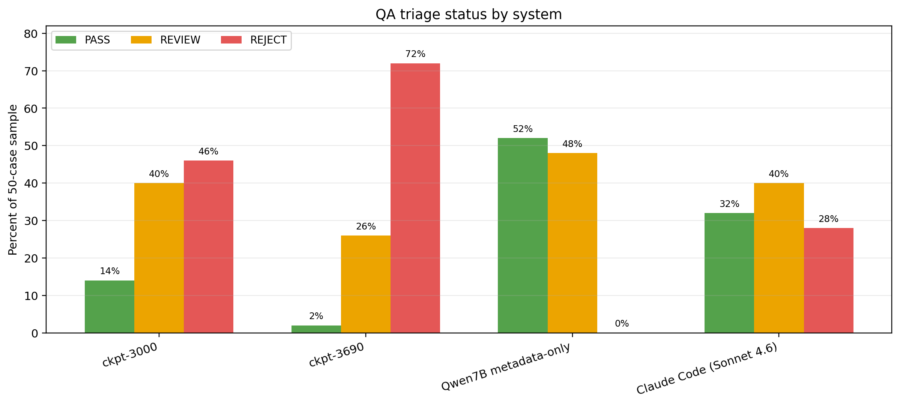

CivilRightsSummarizedAI
Built a multi-document legal case summarization pipeline for the Civil Rights Litigation Clearinghouse using ingestion, evaluation, and fine-tuning workflows. The project emphasizes reproducibility, human-in-the-loop QA, and the tradeoffs involved in using LLM systems for high-stakes legal-document summarization.
More details
Problem
Civil-rights case materials often span multiple documents and require a reviewer to piece together procedural history, parties, and outcomes across a large record. The project goal was to create a pipeline that could ingest case materials, generate summaries, and evaluate quality in a way that supported careful human review rather than replacing it.
Approach
I worked from an end-to-end pipeline perspective: ingestion, storage, preparation, model experimentation, and evaluation. The public repo includes installable source code, tests, fixture data, reporting artifacts, and QA-oriented tools so the system can be reviewed as a complete engineering project rather than just a modeling notebook.
Results & Impact
The project produced a documented comparison between checkpoints and showed that the last training checkpoint was not the strongest one. That outcome reinforced an important lesson for applied AI systems: evaluation and review workflow matter as much as model generation, and higher-stakes domains need quality gates instead of blind automation.